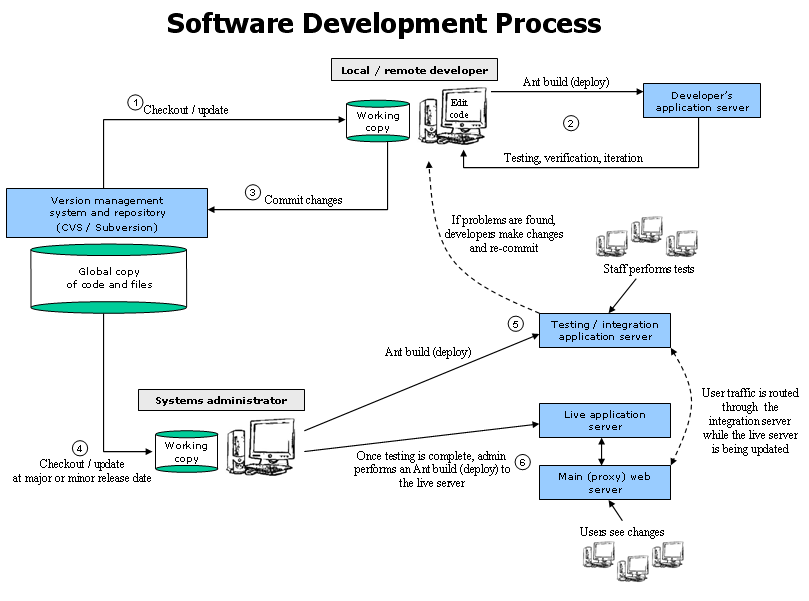

The software development process used at Digital Learning Sciences (DLS) is designed to enable concurrent incremental development of components by multiple software engineers, web designers and others in a distributed fashion. The process is used in the development of major software components including the Digital Discovery System (DDS), the Digital Collection System (DCS) (also packaged as the NSDL Collection System (NCS)), and the jOAI software.
The software development process diagram below shows the flow of development for a typical software component.

The numbered items in the diagram indicate the progression of development over time, which is detailed here:
1. The developer checks out or updates his or her code and files from the main CVS repository (see the CVS repository description below). Each time the developer performs an update, he or she will receive changes made by other developers working on the project and obtain the latest version of the software under development. Alternatively, developers may request older versions of the code and files to work on, if necessary.
2. Once the developer has updated their working copy of the code and files, he or she performs an Ant build to compile the software and deploy it to their personal application server (Tomcat) (see the software build description below). The developer can then accesses their server to inspect the changes that others have committed. The developer will then make changes to their working copy to add or change functionality, which typically involves making changes, deploying them to the application server, inspecting, testing and verifying them multiple times in an iterative fashion. While working in their development area, the changes that they make are not available to other developers until they are committed to CVS.
3. The developer then commits the changes he or she has made to the global CVS repository, and enters notes about those changes that other developers can read. Typically commits are made once the developer has verified that the changes they have made will not break the software or disrupt the work of other developers. When changes are committed, other developers are notified automatically by e-mail and they may then update their working copy to obtain the changes when they are ready.
4. At major and minor release points, a web administrator will check out the code and files to perform a master build. Major release points occur infrequently and involve major changes in the software. Minor release points occur more frequently, on the order of once or twice a month, and involve small changes in the UI and/or small bug fixes.
5. The web admin builds the updated software to an integration server for testing. The integration server closely mirrors the live environment by bringing together multiple components of the library that interact with the software. Once built, the staff performs a series of tests to verify the software (see the testing procedures description below). Bugs that are detected are sent back to developers for fixes. Fixes then get re-updated to the integration server and re tested until found satisfactory.
6. Once the software has completed testing, the web administrator performs a build to the live web application server. During this build process, traffic is re-directed through the integration server so that users will see no down time. Once the build is complete, traffic is once again directed to the live server. Finally, an administrator tags the code and files in CVS with a version number for future retrieval by version, if necessary (see the software versioning description below).
The typical software project contains all the files and libraries necessary to build the software within a single directory. Each project resides in a CVS or Subversion code repository. As a rule, each project directory is named xxx-project, where xxx denotes the software or module name, for example DDS, jOAI, etc. In many cases a project will have dependencies upon other projects at build time and/or run time. For example the DDS, DCS, jOAI and ID mapper projects depend on the Java source code project (dlese-tools-project) at build time and the DDS uses the ID mapper service, the vocabulary manager service and the shared UI components at run time. Details on projects and project dependencies is provided below.
The web application projects (DDS, DCS, jOAI and others) have the following file and directory structure:
The structure above was taken directly from the jOAI project, which represents
a typical web application. Other projects that are not web applications have
similar structures. For example, the dlese-tools-project, which contains the
DLESE/DLS Java class libraries, lacks a web directory but instead has a scripts
directory that contains scripts that are used to execute Java code at the command
line, such as the validate and transform commands.
The DLS CVS repository houses many of the software projects developed by DLS. Each project is contained in a top-level directory within the repository. Here is a summary of some of the projects currently in the repository (see the current CVS view of the repository):
A CVS tutorial is available for developers to use as a starting point or
as a reference. The tutorial walks through a typical use scenario that exercises
each of the regularly used CVS commands. In addition, the CVS repository contains
a demonstration project (cvs-demo-project) that can be used to practice issuing
CVS commands in a safe environment. The demonstration project is discussed in
the CVS tutorial.
Many of the software projects require a build step to compile and package the software for testing, deployment and/or release. The DDS, DCS and jOAI projects provide an example of how a typical web application build process works. Each of these projects use the Ant utility to organize and execute the software build, which is defined by the Ant build.xml file. Because the build process is fully defined in this file, each developer can build the software uniformly using the Ant utility in their development area, which may be run on any of the major platforms (Linux, UNIX, Mac OS, and Windows).
During a build, the Java code is compiled and each of the files used in the software are copied from the project area to the appropriate location expected by the web application server (Tomcat). For distributable releases, this structure is then packaged as a Java WAR file, which can be downloaded and dropped into a servlet container such as Tomcat for deployment. The project directory structure outlined above complements the build process - in some cases an entire directory, such as the web directory, is copied verbatim during a build. The build process and directory structure used at DLS is similar to the deployment process developed by Apache.
Each project build file contains instructions at the top that outline what dependencies the project has and defines properties that must be set in order to build the software. Within the build file there are multiple "targets." Each target performs a certain build function, which are defined below. Ant acts a lot like the Make utility, and many of the target names stem from traditional Make conventions such as "clean," "all," and "compile." Like Make, Ant only compiles and copies files when it detects the original source has been modified, and otherwise leaves them alone.
Typical Ant targets and their function (taken from the jOAI project):
Ant Target |
Function |
| all | Deletes all compiled Java byte code and re-compiles from scratch. |
| clean | Deletes all compiled Java byte code. |
| clean-tomcat-work | Deletes the tomcat work directory, which is used to cache compiled JSP pages. |
| cleanall | Deletes all compiled Java byte code and the software distribution build. |
| cleandist | Deletes the software distribution build. |
| compile | Builds the Java byte code from source. Note that for the DDS, jOAI and ID mapper projects the byte code is built from the source files found in the dlese-tools-project. |
| deploy | Builds the Java byte code from source and deploys all application files to the appropriate location in Tomcat. After executing the deploy target the software can then be run and tested. |
| deploy-clean | Deletes all deployed application files from Tomcat. |
| dist | Builds the entire software application to a distribution staging area and creates binary and source distribution zip archives that can be released to the public. |
| javadoc | Builds the Javadoc source-code documentation. Note that for the DDS, jOAI and ID mapper projects the source code resides in the dlese-tools-project. |
| junit | Builds the JUnit regression testing code and runs the suite of tests, outputting the test results to the terminal. |
| prepare | This target is used by other targets to prepares the software for the build process and is not meant to be executed manually. |
The following dependencies exist between projects:
Project |
Build-time dependency |
Run-time dependency |
| joai-project | dlese-tools-project (Java libraries) | None |
| dds-project | dlese-tools-project (Java libraries) | idmap-project, vocab-ui-project |
| idmap-project | dlese-tools-project (Java libraries) | None |
| dcs-project | dlese-tools-project (Java libraries), dds-project | None |
| news-opps-project | dlese-tools-project (Java libraries) | dds-project (uses the search web service), dcs-project (uses the put record web service) |
| cas-project | dlese-tools-project (Java libraries) | dds-project (uses the search web service) |
At major release points, each software project gets a version, which is tagged in CVS for retrieval. The version scheme for software applications follow this convention:
W.X.Y
Where:
Examples: DDS v3.1.9, jOAI v2.0.9
The development process is used by software developers both internal and external.
The development process is used to organize and streamline the development of web applications and other software within the distributed DLS developer community.
Required: Ant, CVS.
Typical: Tomcat, Java, JEdit, JUnit.
In a typical software development workflow, testing occurs at two stages: locally by the software developer during iterative development, and globally at major release points by developers, staff and larger community.
Typically each developer will test the areas of the software that they have been developing and, once they are free of noticeable bugs, will commit the changes to the CVS repository. Thus, once the software is checked in to CVS the developer has assured the software will compile and run and that the changes will allow the continuation of development work being done by others.
To facilitate testing, each major Java software project has a JUnit test suite that can be extended to provide uniform regression tests for critical software functionality and required software output. This is important because the DLESE/DLS Java libraries are used by multiple projects. If a developer changes the functionality of a Java library while working on one project the changes may effect the run-time accuracy and/or performance of another project. Regression testing can detect when such changes effect critical functionality across projects, minimizing the need for manual testing and reducing the occurrence of unintended bugs in production code. The JUnit test environment works particularly well for iterative development procedures like those used at DLS. Currently regression testing is not being used systematically at DLS.
In addition to the regression testing that is performed by developers, additional testing is performed by staff and others in the community prior to major releases to ensure the performance and accuracy of the software meets requirements. Performance testing is used to determine the number of user requests the software is able to handle in a given amount of time. DLS uses JMeter to perform this type of testing, and has also investigated the use of HTTPerf and the HTTPUnit plug in to JUnit to support this form of testing in an automated, iterative fashion.
In addition to performance testing, staff performs systematic testing to determine the accuracy of the application's output. This involves forming a list of requirements, creating a suite of tasks that exercise the requirements and then performing the tasks and verifying the output to establish reasonable accuracy. When problems are encountered, feedback is passed to developers to address and then testing is performed again in an iterative fashion.
Last updated: $Date: 2010/04/26 18:39:44 $
Author: John Weatherley